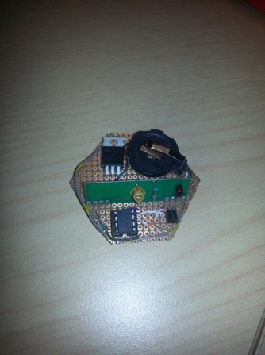

Interactive Bike Light


Autodesk - Product Design Engineer Intern
Role: Mechanical Engineer, Software Engineer, Hardware Engineer
During my internship at Autodesk in the summer of 2015, I explored how materials are used by designers in product design. Along with this, in order to gain insights on how materials are used, I put myself in the shoes of a product designer and made an interactive bike light.
This interactive bike light is used as an accessory to "light the space around bikers". I observed that bikes lights currently are only indicators that attract the attention of drivers in order to stop accidents. However, I believe that allowing bikers to communicate with lights as well as outlining the space that they occupy, much like a car does, would be safer.
The bike light is made up of 3 parts:
- The Mount : Made of a flexible 3D printed material to take the shape of a bike's various structural components.
- The Light Modules: Each light module has a high powered LED and communication components to interact with each other as well as a central component.
- The Central Component: A tactile screen attached to the handle bar of a bike in order to prompt the lights to show visual pattens and signals.